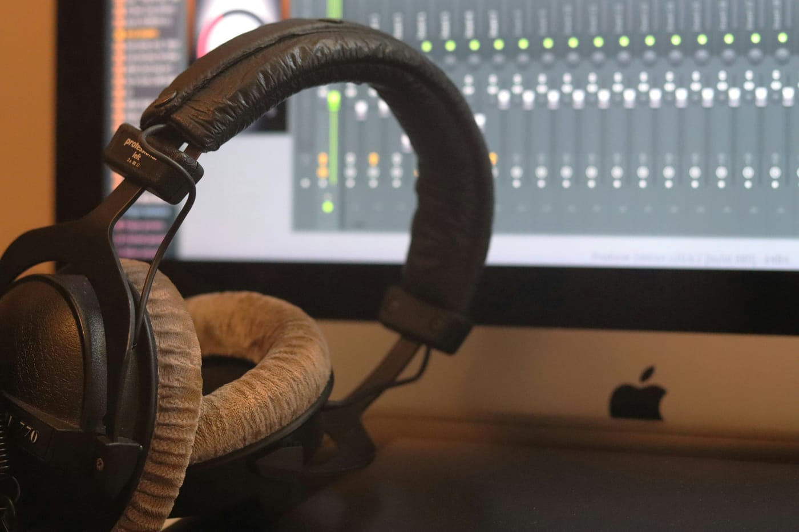
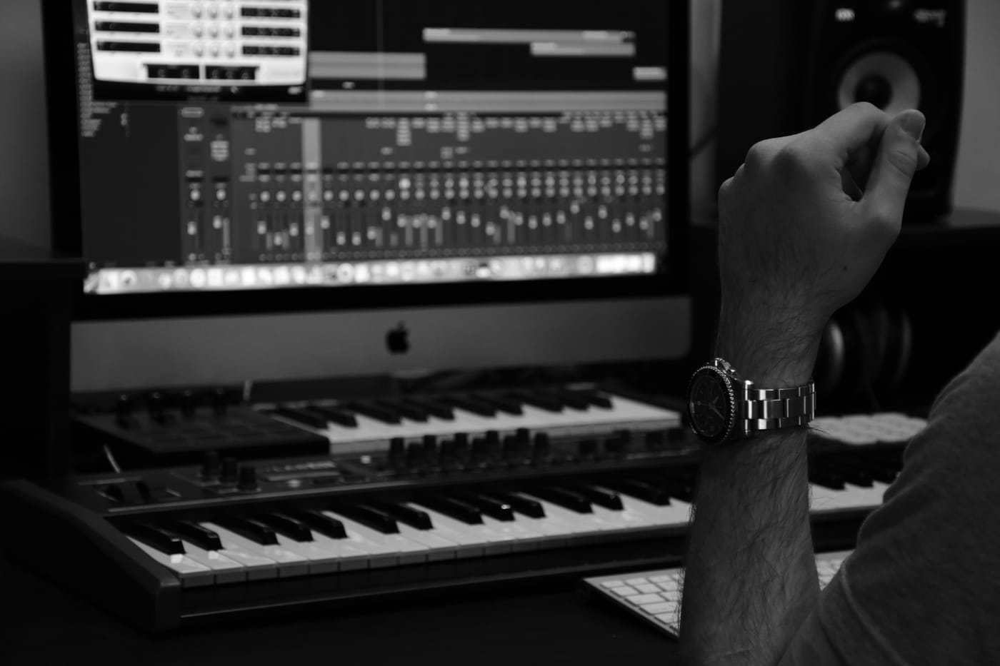

Wkładasz słuchawki, odsłuchujesz swój najnowszy mix i myślisz: "to brzmi naprawdę dobrze". Chwilę później puszczasz ten sam plik na głośniku telefonu albo w aucie - i coś jest nie tak. Bas zniknął, wokal jest zagubiony gdzieś w tle, całość brzmi płasko i cienko.
To nie jest Twoja wina (przynajmniej nie cała) - ale to też nie jest coś, co musisz zaakceptować. W tym artykule wyjaśniamy, dlaczego mix brzmi inaczej na różnych systemach odsłuchowych, co najczęściej za to odpowiada w samym miksie i jak to przetestować i poprawić, zanim wyślesz utwór dalej.
To nie magia: różne głośniki to inna fizyka
Zanim przejdziemy do konkretnych błędów miksowania, warto zrozumieć, dlaczego różne systemy odsłuchowe brzmią tak różnie. To nie kwestia "jakości" słuchawek czy głośnika - to kwestia fizyki.
Słuchawki studyjne działają blisko uszu i odtwarzają pełne pasmo częstotliwości. Dodają też charakterystyczną, sztuczną szerokość stereo - dźwięk lewego i prawego kanału trafia bezpośrednio do odpowiedniego ucha, bez mieszania się akustycznie (jak to się dzieje przy głośnikach). Efekt: brzmienie wydaje się szerokie, przestronne i pełne basu.
Małe głośniki telefonu i laptopa to zupełnie inny świat. Przetworniki są mikroskopijne - fizycznie nie są w stanie wprawić wystarczającej ilości powietrza w ruch, żeby odtworzyć niskie częstotliwości poniżej ok. 150-200 Hz. Często odtwarzają dźwięk w quasi-mono lub w bardzo wąskim stereo.
Konkluzja: jeśli mix "żyje" głównie dzięki elementom, których małe głośniki nie potrafią odtworzyć - głęboki bas poniżej 150 Hz, ekstremalnie szerokie stereo - na małym systemie zabrzmi pusto i cienko. Nie dlatego, że coś zepsułeś, ale dlatego, że miksowałeś tylko pod jeden typ systemu.
Najczęstsi winowajcy w Twoim miksie
Kiedy mix rewelacyjnie brzmi w słuchawkach, ale rozczarowuje na telefonie, zwykle za problem odpowiada jedna (lub kilka) z tych czterech przyczyn:
1. Za dużo energii poniżej 150 Hz
Jeśli bas i kick mają swoją główną "moc" w zakresie 60-100 Hz, na małych głośnikach po prostu jej nie ma - bo przetwornik jej nie odtworzy. Mix natychmiast traci energię i robi się cienko. Rozwiązanie nie jest proste ("po prostu wytnij bas") - kluczem jest upewnienie się, że bas i kick mają też wystarczającą obecność w zakresie 150-300 Hz (harmoniczne, "mięsistość") i 1-3 kHz (atak, "klik" stopy), żeby były słyszalne nawet bez niskich częstotliwości.
2. Zbyt szerokie stereo na kluczowych elementach
Bas i kick powinny być w centrum stereo (mono lub bliskim mono). Jeśli masz je szeroko stereofonicznie, przy sumowaniu do mono (a wiele głośników tak odtwarza) mogą się częściowo wyciszać przez efekt fazy - to tzw. phase cancellation. To samo dotyczy wokalu - główna linia wokalna powinna siedzieć centralnie, nie "rozlewać" się po całej scenie stereo.
3. Maskowanie w średnicy
Na małym głośniku cały zakres częstotliwości jest "spłaszczony" do pasma, które przetwornik odtworzy - głównie środka. Jeśli w miksie jest wiele instrumentów walczących o zakres 200-800 Hz, na małym głośniku wszystko zlewa się w jedną "papkę". Tutaj pomaga precyzyjne equalizowanie - wycinanie wąskich zakresów, żeby każdy instrument miał swoje miejsce.
4. Zbyt niski ogólny poziom / brak odpowiedniego masteringu
Na małych głośnikach różnice w głośności są bardziej słyszalne - "ciche" miejsca brzmią wyjątkowo słabo. Jeśli Twój master jest za głośno dynamiczny albo za cicho zmasterowany w stosunku do komercyjnych produkcji, na telefonie wypadnie bardzo słabo. Kilka dB różnicy w loudness ma tu ogromne znaczenie.

Test mono: najważniejsze narzędzie, którego pewnie nie używasz
Spośród wszystkich technik testowania miksu test mono jest najprostszy i najbardziej odkrywczy. Polega na zsumowaniu obu kanałów stereo do jednego sygnału mono - dokładnie tak, jak "słyszy" głośnik telefonu lub mały głośnik bluetooth.
Jak go przeprowadzić? Większość DAW-ów ma przełącznik mono w masterze lub na interfejsie. Możesz też użyć wtyczki na master bus, która to robi. Przełącz mono i posłuchaj uważnie:
- Bas "znika" lub znacznie się wycisza - sygnał basu, który ustawiłeś stereofonicznie lub z fazą, przy sumowaniu do mono częściowo się kasuje. Rozwiązanie: bass mono lub bliski mono.
- Wokal robi się cichszy lub głośniejszy w nieoczekiwany sposób - problem z fazą efektów nałożonych na wokal (reverb, delay, chorus). Sprawdź, czy efekty nie wchodzą w fazę z oryginalnym sygnałem.
- Perkusja traci "klej" - jeśli używałeś szerokiego stereo na bębnach, po mono mogą się rozpaść. Kick i snare powinny trzymać się dobrze nawet w mono.
Złota zasada: bas i kick trzymaj w mono (lub bliskim mono). Szerokie stereo zostaw elementom ozdobnym - pady, gitary w tle, efekty. Im ważniejszy element dla energii utworu, tym bardziej powinien być centralny.

Jak testować mix na różnych systemach
Zawodowi realizatorzy dźwięku zawsze miksują na minimum kilku różnych systemach odsłuchowych - nie dlatego, że lubią komplikować życie, ale dlatego, że każdy system ujawnia inne problemy.
Minimalne "portfolio" do testowania miksu:
- Dobre monitory lub słuchawki referencyjne - podstawa pracy, gdzie słyszysz szczegóły i podejmujesz decyzje.
- Głośnik telefonu lub laptopa - obowiązkowe. Tu sprawdzisz, czy mix "trzyma się" bez basu i bez szerokiego stereo.
- Samochód (jeśli możliwe) - głośniki samochodowe brzmią inaczej niż wszystko inne. To jeden z ulubionych systemów testowych profesjonalistów.
- Małe głośniki bluetooth - często odtwarzają w mono lub quasi-mono, naturalny test sumy kanałów.
Równie ważne jest porównanie referencyjne - weź profesjonalnie wydany utwór z tego samego gatunku, puszczaj go naprzemiennie ze swoim miksem na tych samych systemach i porównuj. Gdzie Twój mix brzmi cieniej? Gdzie jest za głośny? Gdzie traci czytelność? To "jabłka z jabłkami" - najuczciwszy możliwy test.
Warto też odsłuchiwać miks przy niskim poziomie głośności - jeśli na małym głośniku i tak będzie cicho, warto wiedzieć, jak mix "trzyma się" przy niskiej głośności. Profesjonalne mixy brzmią rozpoznawalnie nawet przy bardzo niskim wolumenie - bo balans jest tam, gdzie powinien być.
Szybkie poprawki, które możesz zrobić już teraz
Kilka działań, które możesz wprowadzić od razu, żeby Twój mix brzmiał lepiej na różnych systemach:
Zsumuj bas i kick do mono
Na kanale basu i stopy wyzeruj panoramę do centrum. Jeśli używasz wtyczki do stereo widening, wyłącz ją na tych kanałach. Test: włącz mono w masterze i sprawdź, czy bas nadal słyszysz wyraźnie - jeśli tak, jesteś w dobrym miejscu.
Ogranicz szerokość stereo poniżej 150 Hz dla całego miksu
Na masterze możesz użyć multibandowego widening lub MS processingu, żeby wymusić mono poniżej ok. 150 Hz. Prawie każdy limiter masteringowy lub wtyczka multibandowa ma tę opcję. To jedna z najbardziej skutecznych zmian, jakie możesz zrobić.
Sprawdź czytelność w mono
Przełącz mono i posłuchaj, czy wokal, bas i kick są nadal wyraźne. Jeśli któryś z tych elementów traci siłę - masz problem z fazą lub stereo na tym kanale. Poprawka: zawężenie panoramy lub wyrównanie fazy.
Podkreśl pasmo 2-5 kHz
Delikatne podbicie w zakresie 2-5 kHz (szczególnie na wokalu i kluczowych instrumentach melodycznych) pomaga "przebić się" przez małe głośniki bez zwiększania głośności basu. To pasmo jest kluczem do obecności i czytelności na małych systemach. Jeśli chcesz dowiedzieć się więcej o precyzyjnym kształtowaniu pasma, zajrzyj do artykułu co to jest EQ i jak go używać w miksie. O kontroli dynamiki i spójności brzmienia przeczytasz z kolei w poradniku kompresja w muzyce.
Dobry mix nie brzmi dobrze na jednym systemie - brzmi akceptowalnie na każdym. To nie jest kompromis, to cel. Wielkie produkcje brzmią świetnie na monitorach i "do roboty" na głośniku telefonu - i na tym polega profesjonalizm.
Najczęstsze pytania (FAQ)
Czy mix powinien brzmieć dobrze w mono?
Tak - to jeden z najlepszych testów jakości miksu. Wiele systemów odtwarzania (głośniki telefonów, część głośników bluetooth, systemy nagłośnieniowe) odtwarza dźwięk w mono lub bliskim mono. Jeśli kluczowe elementy miksu znikają po przełączeniu na mono, zbyt wiele "życia" utworu zależy od efektów stereo.
Dlaczego bas znika na głośniku telefonu?
Małe przetworniki w telefonach i laptopach fizycznie nie są w stanie odtworzyć bardzo niskich częstotliwości (zwykle poniżej 150-200 Hz). Dlatego ważne jest, by bas i kick miały też obecność w wyższych częstotliwościach - wyraźny atak stopy, harmoniczne basu w zakresie 150-300 Hz.
Jakie utwory warto wykorzystać jako referencję?
Najlepiej wybrać profesjonalnie wydane utwory z tego samego gatunku, o podobnej instrumentacji do Twojego projektu, i odsłuchiwać je na tych samych systemach co własny mix - to pozwala porównywać jabłka z jabłkami i wyłapywać różnice w balansie, głośności i szerokości stereo.
Czy warto miksować na słuchawkach?
Słuchawki są przydatne do wychwytywania detali, szumów i problemów ze stereo, ale dają nierealistyczny obraz basu i przestrzeni w porównaniu z głośnikami. Najlepiej traktować słuchawki jako jedno z kilku narzędzi odsłuchowych, a kluczowe decyzje dotyczące balansu i basu weryfikować na monitorach i małych głośnikach.